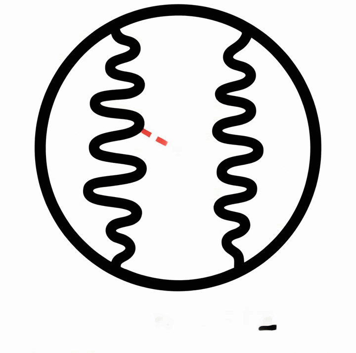
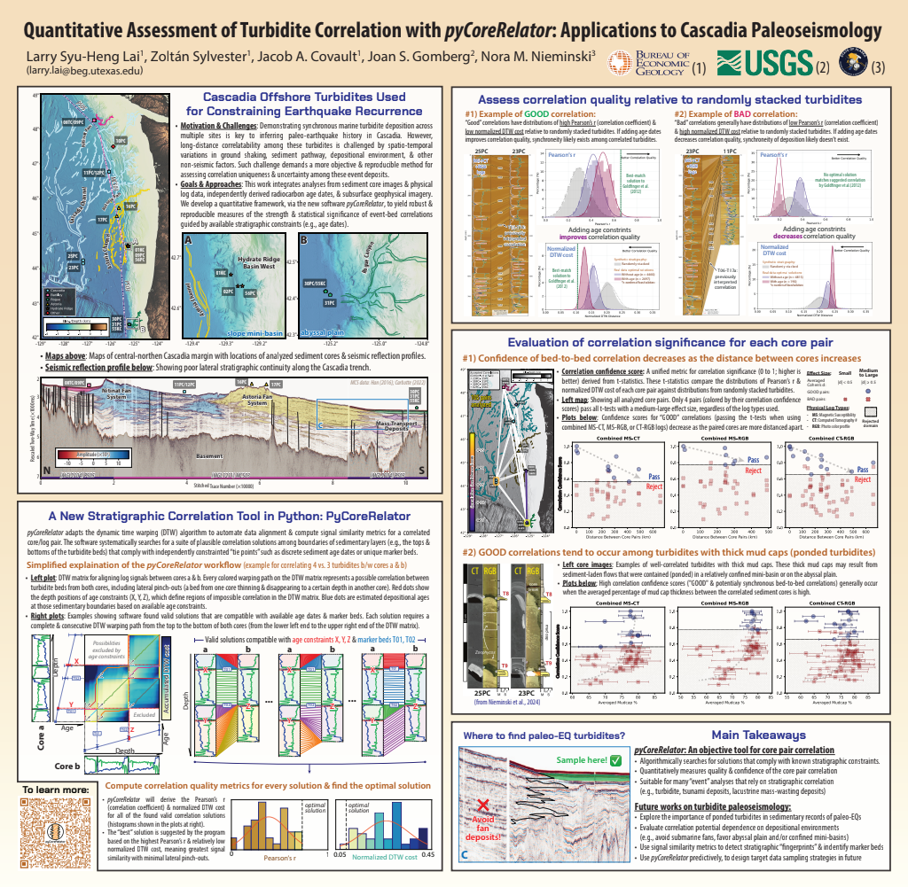

Quantitative stratigraphy
pyCoreRelator

A Python tool for automated stratigraphic correlation analysis.
GitHub repository · Project page
Details to be updated. Demo slides and a poster are below for early information.
Demo slides

Larry Lai - Cascadia_pycorerelator_demo.pptx
Related poster
